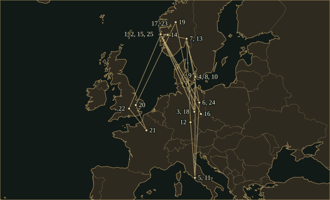

EdvardGrieg
Composer, the son of a Bergen merchant, who used Norwegian fiddle tunes, a troll king and a wedding party in concert-hall music.
- Trained
- Leipzig Conservatory, 1858–62 (Hauptmann, Richter, Reinecke)
- Posts
- Conductor in Christiania, 1866–74 · Harmonien, Bergen, 1880–82 · a state composer’s stipend from 1874
- Turning points
- Rikard Nordraak 1864–65 · Piano Concerto 1869 · Peer Gynt 1876 · Troldhaugen 1885
- Output
- Ten books of Lyric Pieces, about 170 songs, a piano concerto, stage music, a string quartet and five sonatas
“The most important thing is truth, the truth of feeling.”
Life
Edvard Grieg was born on 15 June 1843 in the family house at Strandgaten 152, above Bergen’s harbour. His father, Alexander, was a merchant and the British vice-consul; his mother, Gesine, who had studied singing, piano and theory in Hamburg, taught him the piano from the age of six. He hated scales. In his essay Min første Succes he recalled the day at five when he stretched up to the keyboard and found a third, a triad, a four-note chord and at last, with both hands, the five notes of a ninth. “That was a success!” he wrote. “Nothing since has been able to intoxicate me like this.”
1858–62Leipzig
In the summer of 1858 the violinist Ole Bull called without warning at the Griegs’ summer house at Landås. Edvard was made to play. Bull grew serious, talked quietly with the parents, then shook the boy in his own way and said: “You are going to Leipzig to become an artist!” On 6 October Grieg entered the Conservatory. He later called it “that damned Leipzig conservatory”, but he went free to the Gewandhaus rehearsals, saw Tannhäuser fourteen times, and heard Clara Schumann play her husband’s concerto. In the spring of 1860 tuberculosis ruined one of his lungs. That autumn, against the doctor’s advice, he went back.
1863–67Copenhagen
In April 1863 Grieg went to Copenhagen on a loan from his father. Niels Gade, the city’s leading composer, challenged him to write a symphony. Grieg wrote the first movement in two weeks and finished the work in 1864; a few years later he stamped the score Must never be performed. Rikard Nordraak, a year older than Grieg, changed his direction. Nordraak wanted Norwegian art music to grow from Norwegian folk music. After Nordraak had played and sung some of his songs, Grieg wrote, “a mist fell from my eyes and I knew what I wanted”. At Christmas 1864 he gave his cousin Nina Hagerup, a singer, a set of songs on poems by Hans Christian Andersen. The best-known song in the set is Jeg elsker Dig. Nordraak died in Berlin in March 1866. Grieg was in Rome and wrote a funeral march. In May he stood at the grave, took an oak leaf from it and sent the leaf to Nordraak’s father. On 11 June 1867 he married Nina in St John’s Church, Copenhagen.
1868–70The Piano Concerto and Liszt
The Griegs settled in Christiania, where he conducted and, with the composer Otto Winter-Hjelm, started a music academy. That June, 1868, Grieg went to Søllerød, a village north of Copenhagen, and wrote his Piano Concerto in A minor. It opens with a timpani roll and a flourish for the piano, and was first played in Copenhagen on 3 April 1869 by Edmund Neupert. Neupert wrote at once: “Already after the cadenza in the first movement the audience broke into a real storm.” Seven weeks later the Griegs’ daughter Alexandra, born the April before, died aged thirteen months.
In 1870 Grieg took the manuscript to Rome, to a monastery near the Forum where Franz Liszt was living. Liszt sat down at the piano with it, announced that he would show the company that he could not sight-read it either, and played the whole concerto, talking and nodding as he went. He took the first movement too fast and played the cadenza best. In the finale, where the orchestra changes a G♯ to a G, he got up, strode across the cloister and sang the theme loudly: “G, G, not G sharp! Splendid!” He then told Grieg to carry on.
1874–76Peer Gynt
On 23 January 1874 a letter from Henrik Ibsen, in Dresden, asked Grieg for music for a stage production of Peer Gynt. He agreed gladly. The commission grew to twenty-six numbers, and he found it hard going. By August he was telling his friend Frants Beyer that he had written a piece for the troll king’s hall that he could hardly bear to hear, because it reeked so much “of cow-pats, of Norwegian-Norwegianness and smugness”. He hoped the irony would be heard. The play opened at the Christiania Theatre on 24 February 1876 and had thirty-six performances that spring. In January 1877 the theatre burned down, and the scenery and costumes were lost with it. Grieg went on revising the score, and drew two orchestral suites from it, published in 1888 and 1893.
1877–85Hardanger, Bergen, Troldhaugen
In the summer of 1877 the Griegs settled on a farm at Ullensvang in Hardanger, and before winter moved to Lofthus, where Grieg had a small work-hut that the farmers called “the Compost Heap”. Here he wrote his String Quartet in G minor. The marriage was under strain, and in 1883 he left Nina; his friend Beyer brought them back together, and in January 1884 she joined him in Leipzig. For the 200th birthday of the playwright Ludvig Holberg, on 3 December 1884, he wrote a suite in the manner of Holberg’s day, which he called “a good exercise for concealing one’s own personality”. In the spring of 1885 the villa he had commissioned from his cousin, the architect Schak Bull, was finished at Hop, outside Bergen. He called it Troldhaugen, “Troll Hill”. By April he was already writing: “By autumn I must think up some devilry to get out again.”
1888–1903Tchaikovsky, Dreyfus and Paris
On 1 January 1888 Grieg met Tchaikovsky at the Leipzig home of the violinist Adolph Brodsky, and Nina sang her husband’s songs after dinner. Tchaikovsky dedicated his Hamlet overture to him. “Kindred spirits don’t grow on trees!” Grieg wrote that May. Cambridge invited both men to receive honorary degrees in 1893; Grieg was too ill to go, and received his in May 1894. The Lyric Pieces continued to appear, ten books and sixty-six pieces between 1867 and 1901, and the Leipzig publisher Peters nicknamed them Semmeln, wheat rolls, because they sold so readily. For the silver wedding in June 1892 more guests came to Troldhaugen than had been invited; in 1896 he marked the day with Wedding Day at Troldhaugen.
In 1899 Grieg, encouraged by his friend Bjørnson, declined an invitation from the conductor Édouard Colonne because of the Dreyfus case; the letter was printed across Europe, and threats arrived for months. Four years passed before he went to France again. On 19 April 1903, at the Concerts Colonne in the Théâtre du Châtelet, whistles and shouts of “À bas Dreyfus” drove him from the podium until the police had cleared the worst of the hall; the concert then continued and ended as a triumph. On 2 May he recorded nine sides at the piano for the Gramophone and Typewriter Company, among them Wedding Day at Troldhaugen in a two-minute version. Eleven days later he wrote to a friend: “I was glad to say farewell to France, and especially Paris.” In the same years he brought the sound of the Hardanger fiddle to the piano in the Slåtter, Op. 72, and the young musicians of Paris began to speak of le nouveau Grieg.
1906–07The last tour
After a doctorate at Oxford in May 1906, Grieg spent the summer on his last choral work, Four Psalms, built on old Norwegian melodies. In March 1907 he set out on one more tour, to Copenhagen, Munich, Berlin and Kiel. His diary for 13 April records a visit to Nordraak’s memorial: “41 years have gone since I stood at this grave, that is: my life.” By late August he was practising for a festival at Leeds. He was admitted to hospital in Bergen on 3 September and died early on the 4th. His ashes, and Nina’s after her death in 1935, lie in the rock wall at Troldhaugen.
Places

All 25 places, with sources
- Bergen · 15 June 1843 · born
Born in the family’s white-painted house at Strandgaten 152, above the Vågen harbour. Coordinates mark Bergen, not the house.
Finn Benestad: Edvard Grieg, Norsk biografisk leksikon · Edvard Grieg Museum Troldhaugen: About Edvard Grieg (Internet Archive capture, 3 September 2021)
- Landås, Bergen · 1858 · heard
At the family’s summer house in the summer of 1858 the violinist Ole Bull heard the boy play and told him: “You are going to Leipzig to become an artist!”
Finn Benestad: Edvard Grieg, Norsk biografisk leksikon · Edvard Grieg Museum Troldhaugen: About Edvard Grieg (Internet Archive capture, 3 September 2021)
- Leipzig · 6 October 1858 – 1862 · studied
Admitted to the Conservatory on 6 October 1858; saw Tannhäuser fourteen times, fell ill with tuberculosis in 1860 and graduated in the spring of 1862.
Finn Benestad: Edvard Grieg, Norsk biografisk leksikon · Edvard Grieg Museum Troldhaugen: About Edvard Grieg (Internet Archive capture, 3 September 2021)
- Copenhagen · April 1863 – 1865 · studied
Went with a loan from his father; met Niels Gade in the summer of 1863 and later Rikard Nordraak; became engaged to his cousin Nina Hagerup in 1864.
Finn Benestad: Edvard Grieg, Norsk biografisk leksikon · Edvard Grieg Museum Troldhaugen: About Edvard Grieg (Internet Archive capture, 3 September 2021)
- Rome · 1865 – April 1866 · travelled
His first Italian stay, recorded in a diary. He met Ibsen at the Scandinavian Club and wrote a funeral march when news came that Nordraak had died in Berlin on 20 March 1866.
- Berlin · May 1866 · travelled
Visited Nordraak’s grave and took an oak leaf from it, which he enclosed in a long letter to Nordraak’s father.
- Christiania (Oslo) · October 1866 – 1874 · lived
Conducted the Philharmonic Society, started a music academy with Otto Winter-Hjelm and, in 1871, founded the Musikforeningen. Left the capital in 1874.
Finn Benestad: Edvard Grieg, Norsk biografisk leksikon · Henry T. Finck: Edvard Grieg (John Lane, 1906)
- Copenhagen · 11 June 1867 · travelled
Married his cousin Nina Hagerup in St John’s Church (Johanneskirken); neither set of parents attended. The couple left at once for Christiania.
Finn Benestad: Edvard Grieg, Norsk biografisk leksikon · Edvard Grieg Museum Troldhaugen: About Edvard Grieg (Internet Archive capture, 3 September 2021)
- Søllerød · June 1868 · lived
Stayed at Søllerød, north of Copenhagen, from June 1868 and wrote the Piano Concerto in A minor there; Nina and baby Alexandra stayed with Nina’s parents.
- Copenhagen · 3 April 1869 · premiere
First performance of the Piano Concerto in A minor, with Edmund Neupert as soloist and Holger Simon Paulli conducting. Neupert wrote that the audience broke into a storm after the first-movement cadenza.
- Rome · 1870 · travelled
Visited Liszt twice. At the second meeting Liszt played the manuscript of the Piano Concerto at sight, and told him to carry on.
Finn Benestad: Edvard Grieg, Norsk biografisk leksikon · Henry T. Finck: Edvard Grieg (John Lane, 1906)
- Bayreuth · 1876 · heard
Attended the first Bayreuth Festival, where Wagner’s Ring was staged complete, and wrote eight reports for the Bergen newspaper Bergensposten.
- Christiania (Oslo) · 24 February 1876 · premiere
Peer Gynt, with Grieg’s music, opened at the Christiania Theatre. It ran thirty-six times that spring; the theatre burned down on 15 January 1877.
Finn Benestad: Edvard Grieg, Norsk biografisk leksikon · Edvard Grieg Museum Troldhaugen: About Edvard Grieg (Internet Archive capture, 3 September 2021)
- Ullensvang, Hardanger · June 1877 · lived
Settled at the farm Øvre Børve in late June 1877 and moved before winter to Lofthus, where he built a small work-hut that locals called “Komposten”. Wrote the String Quartet in G minor in Hardanger. Coordinates mark the Ullensvang district, not Lofthus village or the hut.
- Bergen · 1880–1882 · worked
Settled in Bergen in the spring of 1880 and became conductor of the Harmonien society that autumn, a post he held for two years.
- Dresden · October 1883 · premiere
First performance of the Cello Sonata in A minor, with Ludwig Grützmacher on cello and Grieg at the piano.
- Troldhaugen, Hop · 1885–1907 · lived
His villa, designed by his cousin the architect Schak Bull, was finished in the spring of 1885. It was his home between tours until 1907.
Finn Benestad: Edvard Grieg, Norsk biografisk leksikon · Edvard Grieg Museum Troldhaugen: About Edvard Grieg (Internet Archive capture, 3 September 2021)
- Leipzig · 1 January 1888 · travelled
Met Tchaikovsky at the home of the violinist Adolph Brodsky. Tchaikovsky later inscribed his Hamlet overture to him.
- Jotunheimen · 1891 · travelled
A summer trip that freed his creative energy again. On a mountain farm he heard the dairymaid Gjendine Slaalien sing the “Gjendines bådnlåt”, the only tune he wrote down himself.
- Cambridge · 10 May 1894 · travelled
Received the honorary Doctor of Music in person; he had been too ill to attend in June 1893, when Tchaikovsky, Saint-Saëns, Bruch and Boito were honoured.
Henry T. Finck: Grieg and His Music (John Lane, 1909) · Finn Benestad: Edvard Grieg, Norsk biografisk leksikon · Tchaikovsky Research: Edvard Grieg
- Paris · April 1903 – May 1903 · worked
Returned after the Dreyfus quarrel of 1899. On 19 April he conducted at the Concerts Colonne; whistles and shouts of “À bas Dreyfus” sent him off the podium until the police had cleared the worst of the hall, and the concert ended as a triumph. On 2 May he recorded nine sides for the Gramophone and Typewriter Company.
Marston Records: Legendary Piano Recordings, The Complete Grieg, Saint-Saëns, Pugno and Diémer (liner notes) · Finn Benestad: Edvard Grieg, Norsk biografisk leksikon · Jean-Michel Nectoux: Grieg. The Paris stay of 1903 (Grieg Society paper, 2000)
- Oxford · May 1906 · travelled
Made honorary Doctor of Music at the end of May 1906.
- Troldhaugen, Hop · 1907 · buried
His urn, and later Nina’s, is set in the rock wall at Troldhaugen.
- Berlin · 13 April 1907 · travelled
Laid a laurel wreath at Nordraak’s memorial. His diary entry for 13 April reads: “41 years have gone since I stood at this grave, that is: my life.”
- Bergen · 4 September 1907 · died
Admitted to hospital on 3 September 1907, on the eve of a trip to a festival at Leeds, and died early on the 4th.
Finn Benestad: Edvard Grieg, Norsk biografisk leksikon · Edvard Grieg Museum Troldhaugen: About Edvard Grieg (Internet Archive capture, 3 September 2021)
Influences
Teachers, encounters and borrowed music, each with its account and sources in the Web of Influence.
Influences received
Influences passed on
The sound
The falling turn
A falling second followed by a third: A–G♯–E, or A–G–E. The figure is common in Norwegian folk melody, and Grieg used it repeatedly in his own tunes, from the Poetic Tone-Pictures of 1863 to the string quartet of 1878, where a motto borrowed from an Ibsen song runs through the whole work.
Fiddle and dance
In the Lyric Pieces he imitated folk tunes without quoting any, and he took dance names for his titles: gangar, halling, springar. In the middle of the F major Violin Sonata the piano and violin imitate a Hardanger fiddle playing a springar, and in the Slåtter of 1902–03 he set real fiddle tunes for piano.
Chords
From early on he used chords in unexpected ways, and he grew bolder with time. In a letter to a friend he described putting “hair-raising chord progressions” on paper in a hotel above the Vøringsfoss, and added that they had been born in his head, away from the piano. Klokkeklang, “Bell-ringing”, is a study in sonority built on stacked fifths. Benestad writes that it was harmonically without parallel in its day.
Songs
About 170 songs, which he told his American biographer Henry Finck were all written for Nina. He said that when he set a poem his aim was to bring out the poet’s hidden intentions, and that he did not want to write music for its own sake. The cycle Haugtussa sets poems by Arne Garborg in New Norwegian.
Small forms
Grieg wrote the ten books of Lyric Pieces as music for the thousand homes, and several are easy enough for children. Their titles name a bird, a bell, a march of dwarfs and a wedding. The later books are longer and harder; Wedding Day at Troldhaugen runs to ten pages.
Orchestra
The orchestral writing in Peer Gynt depends on instrumental colour and changes of tempo. “In the Hall of the Mountain King” is a single four-bar tune played over and over, pianissimo at first and then fortissimo and faster. The Holberg suite is for strings alone and follows the forms of an eighteenth-century dance suite.
Works
A selection from the composer’s works.
- 1863Poetic Tone-PicturesOp. 3PianoWritten in Copenhagen. Benestad heard the Grieg motif used here prominently for the first time.
- 1864–65Hjertets Melodier (Melodies of the Heart)Op. 5Voice and piano; poems by Hans Christian AndersenWritten as an engagement present for Nina Hagerup. It contains Jeg elsker Dig, which Benestad called one of the most treasured love songs in music.
- 1865Violin Sonata No. 1 in F majorOp. 8Violin and pianoThis is the sonata Liszt praised in a letter in December 1868. The middle section of its second movement imitates a Hardanger fiddle playing a springar.
- 1867–1901Lyric PiecesOpp. 12–71PianoTen books containing sixty-six pieces. The first book, Op. 12, is easy enough for beginners. The pieces in the later books are longer and harder.
- 1868–69Piano Concerto in A minorOp. 16Piano and orchestraWritten at Søllerød, first played by Edmund Neupert in Copenhagen on 3 April 1869. Grieg revised it until the year he died.Recordings in the Hall
- 186925 Norwegian Folk Songs and DancesOp. 17PianoHis first piano settings of Norwegian folk tunes, after Lindeman and Kjerulf. They began his lifelong interest in harmonising folk melodies.
- 1874–75Peer GyntOp. 23Incidental music for Ibsen’s play; solo voices, chorus and orchestraTwenty-six numbers, first performed at the Christiania Theatre on 24 February 1876. Solveig’s song and the music for the troll king’s hall are among them.
- 1875–76Ballade in G minorOp. 24PianoFourteen variations on a Valdres folk tune, written in the months after both his parents died. After a loud climax it ends as quietly as it begins.
- 1877–78String Quartet in G minorOp. 27Two violins, viola and celloWritten in Hardanger. A motto from his Ibsen song Spillemænd runs through the whole work.
- 1880Two Elegiac MelodiesOp. 34String orchestraArrangements for strings of two of his Vinje songs, Hjertesår and Våren.
- 1882–83Cello Sonata in A minorOp. 36Cello and pianoFirst played at Dresden in October 1883 with Ludwig Grützmacher on cello and Grieg at the piano.
- 1884–85From Holberg’s Time (Holberg Suite)Op. 40String orchestra; also pianoA suite in the old style for the bicentenary of Ludvig Holberg, born in Bergen in 1684: Praeludium, Sarabande, Gavotte, Air, Rigaudon.Recordings in the Hall
- 1886–87Violin Sonata No. 3 in C minorOp. 45Violin and pianoGrieg called this sonata the one “with the wider horizon”, and it uses very little folk material. It is his most-played chamber work.
- 1888Peer Gynt Suite No. 1Op. 46Orchestra“Morning Mood”, “The Death of Åse”, “Anitra’s Dance”, “In the Hall of the Mountain King”.Recordings in the Hall
- 1893Peer Gynt Suite No. 2Op. 55OrchestraIngrid’s Lament, Arabian Dance, Peer Gynt’s Homecoming and Solveig’s Song.
- 1895–98HaugtussaOp. 67Voice and piano; poems by Arne GarborgEight songs on Garborg’s New Norwegian poems. Grieg set twenty of the poems and published eight.
- 1896Wedding Day at TroldhaugenOp. 65 No. 6PianoWritten for his silver wedding and published in 1897. At ten pages it is the longest of the Lyric Pieces.Recordings in the Hall
- 1902–03Slåtter (Norwegian Peasant Dances)Op. 72PianoHardanger fiddle tunes played by Knut Dahle and notated by Johan Halvorsen, arranged for piano.
- 1906Four PsalmsOp. 74Baritone and mixed choirHis last work, on old Norwegian tunes and texts. He called the settings “free arrangements”.
In the score
Short examples, engraved and playable.
The Grieg motif — schematicA falling second, then a third
Peer Gynt Suite No. 1, “In the Hall of the Mountain King” — bars 1–4The tune of the troll king’s hall
Troldtog, Op. 54 No. 3 — bars 2–5Chromatic descent in semitones: the dwarfs
Sister arts

Krøyer painted the Griegs at the piano, Edvard accompanying Nina. She sang his songs, and he told his biographer Henry Finck that she had become “the only true interpreter” of them. He said that he had written them with the inevitability of a law of nature, and that all of them were composed for her.

Gude painted the fjord and Tidemand the people. The setting is the Hardanger country, where Grieg settled on a farm in 1877 and where, in the mid-1890s, above the Vøringsfoss, he harmonised the folk tunes of his 19 Norwegian Folk Songs.

Kittelsen drew this troll in 1906 as a cover for P. Chr. Asbjørnsen’s Illustrerede Eventyr, the folk-tale collection. Ibsen’s Peer Gynt draws on the same Norwegian folk tales, and the hall of the troll king appears in its second act. Grieg wrote a four-bar tune for that scene.
Where to hear more
- Piano Concerto in A minor, Op. 161868–69Leif Ove Andsnes; Berlin Philharmonic; Mariss Jansons · Warner Classics
All three movements of the concerto, paired on the same album with Schumann’s A minor concerto, which Grieg had heard Clara Schumann play in Leipzig. The first movement runs about thirteen minutes, cadenza included.
- Peer Gynt — incidental music, Op. 23 (nineteen numbers)1874–75San Francisco Symphony and Chorus; Herbert Blomstedt · Decca
Nineteen of the twenty-six numbers, many more than the two suites contain, including the Act I prelude, Ingrid’s Lament, the troll king’s hall, Morning Mood, Solveig’s Song and the cradle song that ends Ibsen’s play.
- Haugtussa, Op. 67, and other songs1895–98Anne Sofie von Otter; Bengt Forsberg, piano · Deutsche Grammophon · 1993
All eight Haugtussa songs on Arne Garborg’s New Norwegian poems, then the six German songs of Op. 48 and songs to Danish and Norwegian words, including En Svane, Med en Vandlilje and Våren.
- Lyric Pieces — a selection from Op. 12 to Op. 711867–1901Leif Ove Andsnes, piano · EMI Classics (now Warner Classics)
Twenty-four pieces from nine of the ten books, from the Arietta of Op. 12 to Remembrances in Op. 71, the last book Grieg published.
These recordings are under copyright, so the Hall cannot play them; the links go to the labels’ and artists’ own uploads and to streaming services.
Lineage
Liszt told him to carry on. Grieg had studied Robert Schumann’s A minor concerto before he wrote his own, and he followed its pattern, with the same key, the same flourish for the soloist and no long orchestral exposition. From Wagner came fourteen evenings of Tannhäuser in Leipzig and the Bayreuth reports of 1876. Tchaikovsky became a friend in 1888 and inscribed Hamlet to him. Rachmaninoff used the Grieg concerto as a model for his First Piano Concerto, begun in 1891. In Gil Blas in 1903 Debussy wrote that Grieg’s music left in the mouth the strange, charming taste of a pink bonbon stuffed with snow.
Further reading
- Finn Benestad and Dag Schjelderup-Ebbe, Edvard Grieg: The Man and the Artist, translated by William H. Halverson and Leland B. Sateren (University of Nebraska Press, 1988). biography
The standard life and works of a Bergen merchant’s son, with letters, diaries and music examples in a parallel column.
- Daniel M. Grimley, Grieg: Music, Landscape and Norwegian Identity (Boydell Press, 2006). critical study
On what “Norwegian” meant in Grieg’s music and who decided it. Reads the Lyric Pieces, Peer Gynt and the folk-tune settings against the landscape and politics of the time.
- Finn Benestad, “Edvard Grieg”, Norsk biografisk leksikon (Store norske leksikon). encyclopaedia article
A dense, dated account in Norwegian by the editor of Grieg’s letters of where and when each work and each meeting happened, with quotations from the letters and diaries.
- Henry T. Finck, Edvard Grieg (John Lane, 1906). early biography
The American critic quotes Grieg’s own words on Liszt, Nordraak and his songs, from Grieg’s letters to him and from his letter to his parents about Liszt playing the concerto at sight.
- Finn Benestad and William H. Halverson, eds., Edvard Grieg: Diaries, Articles, Speeches (Peer Gynt Press, 2001). primary sources
Grieg’s diaries, articles and speeches in English, on music, politics and his own life. Edited by Finn Benestad, who also edited his letters.
- Edvard Grieg Archive, Bergen Public Library. archive
In 1906 Grieg and Nina left his manuscripts, letters and printed music to Bergen Public Library, which keeps the Grieg archive and has put his letters to Tchaikovsky online.
Cite this page
Contrapunctus. “Edvard Grieg.” Accessed 20 October 2026. https://mottopanikeiku.github.io/contrapunctus/composers/grieg.html.
@misc{contrapunctus-composers-grieg,
author = {{Contrapunctus}},
title = {Edvard Grieg},
howpublished = {\url{https://mottopanikeiku.github.io/contrapunctus/composers/grieg.html}},
note = {Accessed 2026-10-20}
}